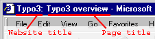

Freesite Creator
###UPDATE_CREATE###
User information:
Name:
###FIELD_realName###
Enter the christian name of the user.
Email address:
###FIELD_email###
Enter a
valid
email-address.
Typo3 Username:
###FIELD_username###
This is the preferred username of the new user. The username must be between 5 and 20 characters A-Z, must be unique, lowercase and without spaces.
The username is also the title of the new usergroup.
Typo3 Password:
###FIELD_password###
Passwords are accepted
only
if they match
perfectly
, include upper- and lowercase characters.
Passwords must be at least 5 characters long.
Language:
###FIELD_lang###
Language of the Typo3 backend.
Site configuration:
Website title:
###TITLE###
Optional.
The website title is always shown in the title-bar of the webbrowser before the page title.
This example shows how the website title "Typo3" would display:

Domain:
###DOMAIN###
Optional.
If the website is on a certain domain, enter it here. Eg. "www.your-domain-name.com"
Note:
If the DNS and webserver
is not
allready configured to direct the domain to this Typo3-site, the new user will not be able to login until that happens!
Directory:
###FOLDER###
Optional.
If you want your site to run from a certain directory
in the current site path or above entered domain
you can enter that directory here. Eg. if you want "www.your-domain-name.com/my_subdir/" to be the path to your site, enter "my_subdir" here.
Allowed characters are standard alphanumeric characters. You can enter max 50 characters and spaces are not allowed.
Template:
###TEMPLATE###
Select a template for your site.
Click here to see a
list of the available templates.
###TEMPLATE_VIEW###
Dummy pages:
###DUMMY_PAGES###
Select a set of dummy pages to be copied to your site.
Click here to see a
list of the available dummy page sets.
###DUMMY_PAGES_VIEW###
Testdriving a dummy page set with the templates?
Yes, click here to
see the dummy page sets in action with the templates!
###UPDATE_CREATE###